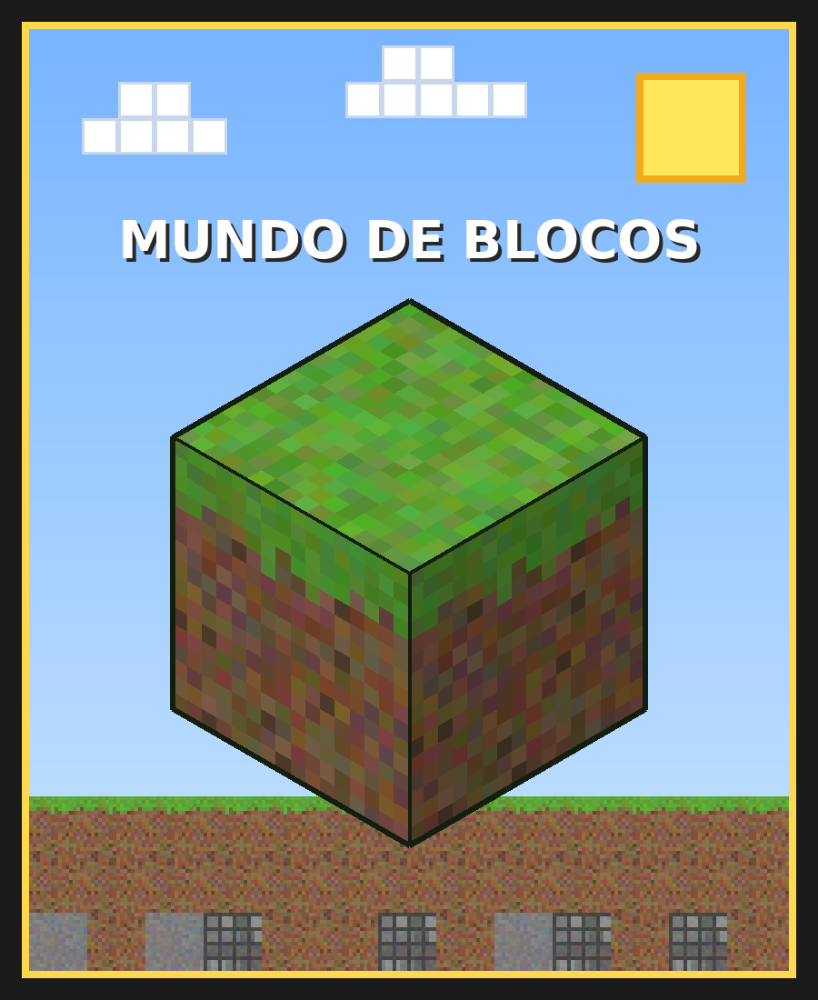

🕶️ Cartão Interativo em RA
Aponte a câmera do celular para o bloco abaixo e veja um mundo de blocos aparecer em cima dele.
📷 Abrir câmera AR
Imagem-alvo
Abra esta página no notebook/projetor (ou imprima) e aponte o celular para ela.
Abra esta página no notebook/projetor (ou imprima) e aponte o celular para ela.

Como funciona
- A câmera captura o vídeo em tempo real.
- O MindAR extrai pontos característicos de cada quadro e compara com os da imagem-alvo (
bloco.mind). - Quando reconhece, calcula a posição e rotação da imagem no espaço (pose).
- O A-Frame / Three.js desenha o objeto 3D alinhado a essa pose, por cima do vídeo.
Participantes
- Eduardo Corrêa
- Leonardo Freitas
- Lucas Raggi
- Matheus Greco
- Rodrigo Leandro
Trabalho de Realidade Aumentada – Ciência da Computação